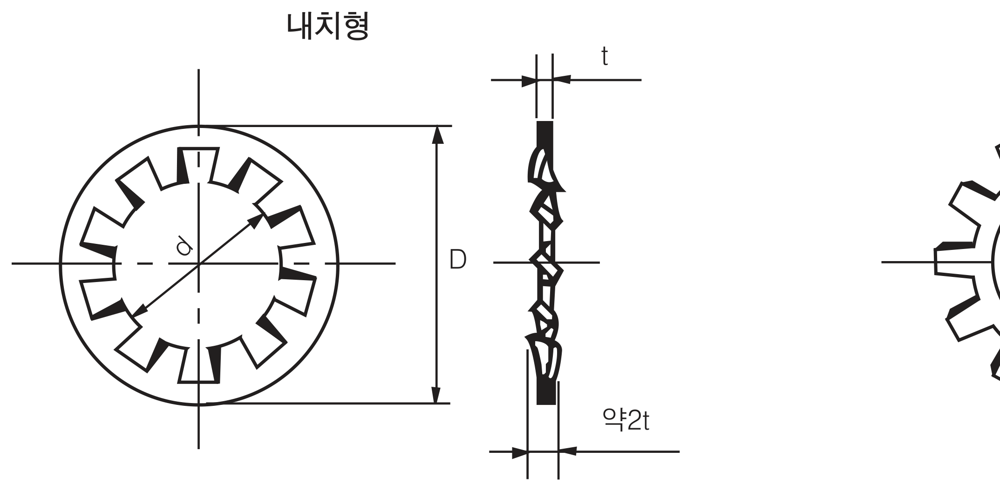
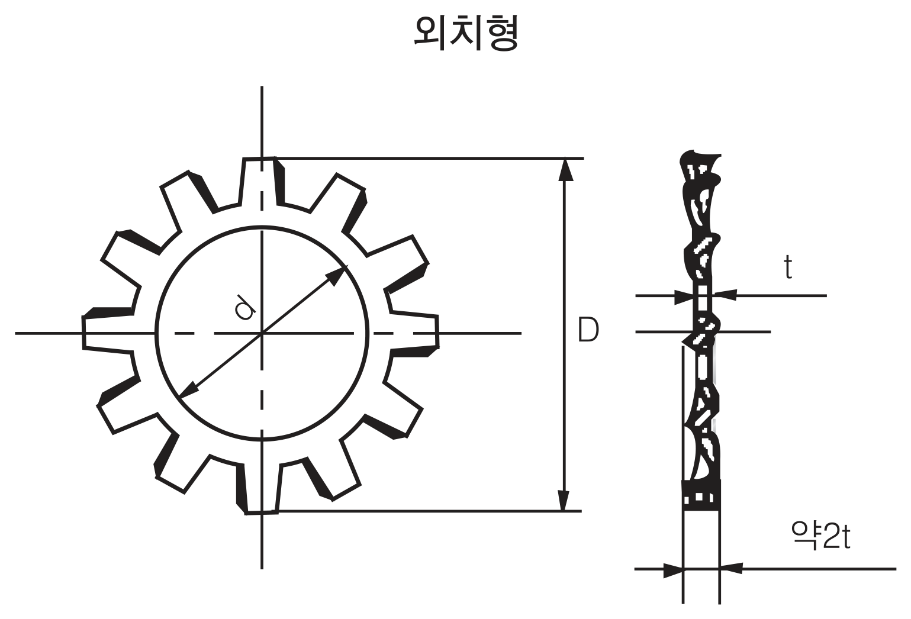

Tooth Lock Washer
안쪽(내치형) 또는 바깥쪽(외치형)에 다수의 톱니가 배치된 와셔로, 볼트·너트 체결 시 톱니 끝이 체결면을 파고들어 풀림을 방지합니다. 규격 기호는 KS B 1325, JIS B 1255를 따르며, 특수 잇발 형상(내치형)과 이중으로 겹친 형태(내·외치 겸용)도 함께 취급합니다.
당사 정식 규격 도면

↑ 내치형(안쪽 톱니)
d=내경 · D=외경 · t=소재 두께

↑ 외치형(바깥쪽 톱니)
d=내경 · D=외경 · t=소재 두께
| 내치형 | 외치형 | d 기준치수 | d 허용차 | D 기준치수 | D 허용차 | t 기준치수 | t 허용차 |
|---|---|---|---|---|---|---|---|
| AW-2 | BW-2 | 2.2 | +0.2 / 0 | 4.8 | 0 / -0.3 | 0.3 | ± 0.025 |
| AW-2.3 | BW-2.3 | 2.5 | 5.3 | 0.3 | |||
| AW-2.5 | BW-2.5 | 2.7 | 5.7 | 0.3 | |||
| AW-3 | BW-3 | 3.2 | 6.5 | 0 / -0.4 | 0.45 | ± 0.035 | |
| AW-3.5 | BW-3.5 | 3.7 | 7.5 | 0.45 | |||
| AW-4 | BW-4 | 4.3 | 8.5 | 0.45 | |||
| AW-4.5 | BW-4.5 | 4.8 | 9.5 | 0.5 | |||
| AW-5 | BW-5 | 5.3 | 10 | 0.6 | ± 0.04 | ||
| AW-6 | BW-6 | 6.4 | 11 | 0.6 | |||
| AW-7 | — | 7.4 | +0.3 / 0 | 13 | 0 / -0.5 | 0.8 | ± 0.05 |
| AW-8 | BW-8 | 8.4 | 15 | 0.8 | |||
| AW-3/8" | BW-3/8" | 9.8 | 17.5 | 0.9 |
| 내치형 | 외치형 | d 기준치수 | d 허용차 | D 기준치수 | D 허용차 | t 기준치수 | t 허용차 |
|---|---|---|---|---|---|---|---|
| AW-10 | BW-10 | 10.5 | 0 / +0.5 | 18 | 0 / +0.5 | 0.9 | ± 0.05 |
| AW-7/16" | BW-7/16" | 11.4 | 19.5 | 0.9 | |||
| AW-12 | BW-12 | 12.5 | +0.4 / 0 | 21 | 0 / -0.6 | 1 | ± 0.055 |
| AW-1/2" | BW-1/2" | 13 | 22.5 | 1 | |||
| AW-14 | BW-14 | 14.5 | 23 | 1 | |||
| AW-16 | BW-16 | 16.5 | 26 | 1.2 | ± 0.065 | ||
| AW-18 | BW-18 | 19 | 29 | 1.2 | |||
| AW-3/4" | BW-3/4" | 19.6 | 32 | 1.2 | |||
| AW-20 | BW-20 | 21 | +0.5 / 0 | 32 | 0 / -0.8 | 1.4 | ± 0.07 |
| AW-22 | BW-22 | 23 | 35 | 1.4 | |||
| AW-24 | BW-24 | 25 | 38 | 1.6 | ± 0.08 | ||
| AW-1" | BW-1" | 26 | 41 | 1.6 |
| Size No. | d 기준치수 | d 허용차 | D 기준치수 | D 허용차 | t 기준치수 | t 허용차 |
|---|---|---|---|---|---|---|
| AW-1811 | 1.9 | +0.2 / 0 | 4.5 | ± 0.1 | 0.25 | ± 0.025 |
| AW-6301 | 6.6 | ± 0.15 | 10.2 | ± 0.2 | 0.5 | ± 0.03 |
| AW-9101 | 9.1 | +0.3 / 0 | 16.5 | 0 / -0.4 | 0.9 | ± 0.05 |
| AW-9102 | 9.1 | 14.8 | 0 / -0.5 | 0.5 | ± 0.03 | |
| AW-9103 | 9.4 | ± 0.15 | 12.9 | ± 0.15 | 0.5 | ± 0.03 |
| AW-9501 | 9.9 | +0.3 / -0.2 | 17.3 | +0.2 / -0.5 | 0.9 | ± 0.05 |
| AW-12002 | 12.2 | +0.2 / -0.1 | 15.2 | +0.5 / 0 | 0.5 | ± 0.03 |
| AW-13001 | 13.1 | ± 0.2 | 16.3 | ± 0.25 | 0.6 | ± 0.04 |
| AW-28601 | 29.1 | +1 / 0 | 46.5 | 0 / -0.8 | 1.6 | ± 0.07 |
| 내치형 | 외치형 | d 기준치수 | d 허용차 | D 기준치수 | D 허용차 | t 기준치수 | t 허용차 |
|---|---|---|---|---|---|---|---|
| JZ-3 | BW-3 | 3.05 | +0.3 / 0 | 6 | ± 0.24 | 0.4 | ± 0.03 |
| JZ-4 | BW-4 | 4.1 | 8 | ± 0.29 | 0.5 | ||
| JZ-5 | BW-5 | 5.1 | 9.2 | 0.6 | |||
| JZ-6 | BW-6 | 6.1 | +0.36 / 0 | 11 | ± 0.35 | 0.7 | |
| JZ-8 | BW-8 | 8.2 | 14 | 0.8 | |||
| JZ-10 | BW-10 | 10.2 | +0.43 / 0 | 18 | ± 0.42 | 0.9 | ± 0.04 |
| JZ-12 | BW-12 | 12.3 | 20 | 1 | |||
| JZ-14 | BW-14 | 14.3 | 24 | 1.1 | |||
| JZ-16 | BW-16 | 16.3 | 26 | 1.2 | |||
| JZ-18 | BW-18 | 18.5 | 30 | 1.4 | ± 0.05 | ||
| JZ-20 | BW-20 | 20.5 | +0.52 / 0 | 32.5 | ± 0.5 | 1.4 | |
| JZ-22 | BW-22 | 22.5 | 35 | 1.5 | |||
| JZ-24 | BW-24 | 24.5 | 38 | 1.5 |
※ 위 도면과 표는 당사 정식 규격표 원본을 직접 옮겨 작성했습니다. t는 소재 두께이며, 잇발 수는 표준을 표시한 것이므로 잇발 수에 증감이 있을 수 있습니다. 정밀 가공·발주 전에는 반드시 정식 카탈로그 원본으로 최종 확인하시기 바랍니다.